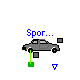
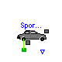

This package contains all the chassis models and chassis component models for the 'SimpleCar' package. Some of the physical characteristics in this package were found in the Bosch Automotive Handbook, 3rd Edition.
SimpleCar.Chassis.GenericCar

This model contains the primitives necessary to model the chassis of a car. This is a very simple model with only a single inertia and not compliances in the car frame.
| Name | Default | Description |
|---|---|---|
| vehicle_mass | 1200 | Vehicle curb weight [kg] |
| final_drive_ratio | 3.43 | Final drive ratio |
model GenericCar "Generic car assembly"
extends Interfaces.Chassis;
parameter Modelica.SIunits.Mass vehicle_mass=1200
"Vehicle curb weight";
parameter Real final_drive_ratio=3.43 "Final drive ratio";
Types.KilometersPerHour kmh "Vehicle speed";
Modelica.Mechanics.Rotational.IdealGear final_drive(final ratio=
final_drive_ratio);
Chassis.Tire tire;
Modelica.Mechanics.Translational.SlidingMass vehicle_inertia(final m=
vehicle_mass);
equation
connect(tire.body_force, vehicle_inertia.flange_a);
connect(tire.road_force, road);
connect(final_drive.flange_b, tire.axle);
connect(final_drive.flange_a, power);
kmh = der(vehicle_inertia.flange_a.s)*3.6;
speed.signal[1] = kmh;
end GenericCar;
SimpleCar.Chassis.Tire

This tire model connects to a driven axle as well as the vehicle chassis and the road. The rotational velocity of the axle is used to compute the relative translational velocity between the road and the vehicle chassis based on the tire radius.
| Name | Default | Description |
|---|---|---|
| tire_radius | .35 | Tire radius [m] |
model Tire "Tire model"
parameter Modelica.SIunits.Radius tire_radius=.35 "Tire radius";
protected
Modelica.SIunits.Position s_rel
"Relative speed between chassis and road";
public
Modelica.Mechanics.Translational.Interfaces.Flange_a road_force;
Modelica.Mechanics.Rotational.Interfaces.Flange_a axle;
Modelica.Mechanics.Translational.Interfaces.Flange_b body_force;
equation
road_force.f = axle.tau/tire_radius;
road_force.f + body_force.f = 0;
// road_force.s = body_force.s;
s_rel = axle.phi*tire_radius;
body_force.s = road_force.s + s_rel;
end Tire;
SimpleCar.Chassis.Road
model Road Modelica.Mechanics.Translational.Interfaces.Flange_a road_surface; equation road_surface.s = 0; end Road;

This model extends the generic car chassis with the physical characteristics of the Ford Mustang.
| Name | Default | Description |
|---|---|---|
| vehicle_mass | 1250 | Vehicle curb weight [kg] |
| final_drive_ratio | 3.45 | Final drive ratio |
model SportsCarChassis "Sports Car Chassis" extends Chassis.GenericCar(vehicle_mass=1250, final_drive_ratio=3.45); equation connect(final_drive.flange_b, wheel); end SportsCarChassis;